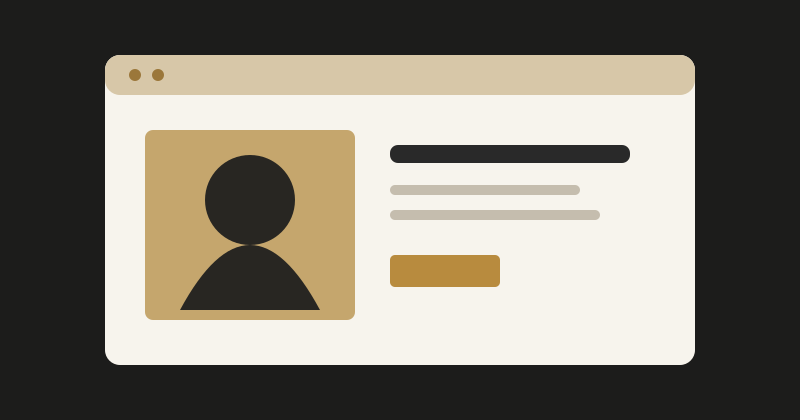
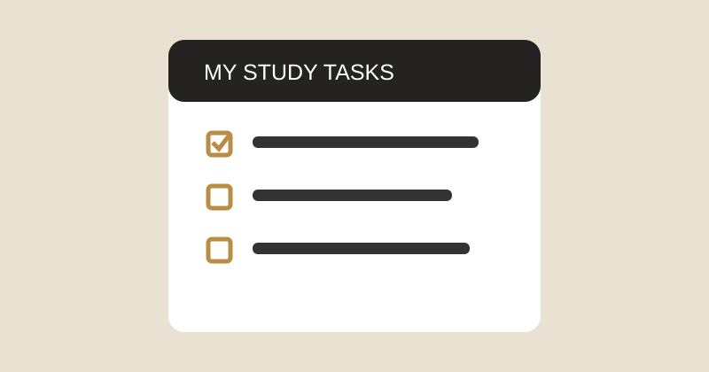
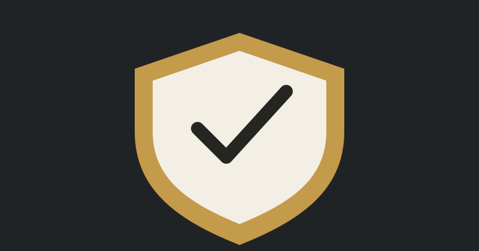

WEB DESIGN
Personal Portfolio Website
A responsive multi-page website presenting a student's profile, education, skills and contact information.
View this website ↗MY WORK
Sample learning projects demonstrating ideas I am developing. Replace these examples with your own completed work as you build it.

A responsive multi-page website presenting a student's profile, education, skills and contact information.
View this website ↗
A browser-based task list that allows students to add tasks, mark work complete and remove tasks.
Try the planner ↗
A sample awareness concept explaining strong passwords, suspicious links and safe browsing habits.
Ask about this concept ↗Academic honesty note: The projects above are sample portfolio entries prepared as starter content. Edit the descriptions and links so they accurately represent work you have personally completed before submission.